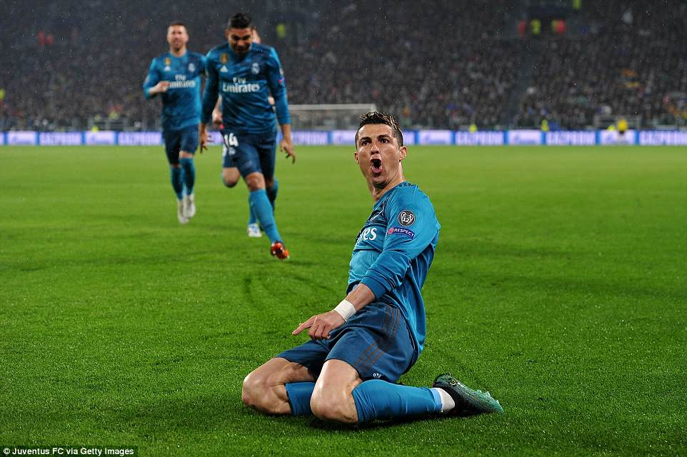
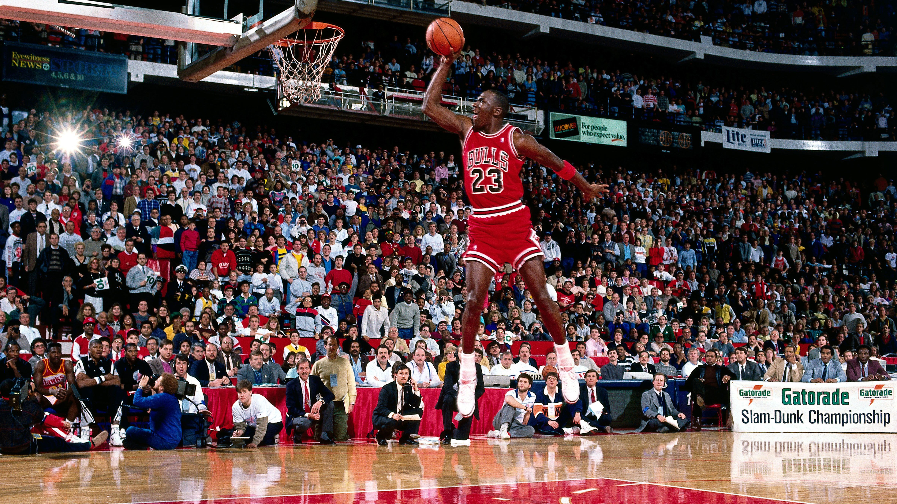

Icons and Their Greatest Achievements
Soccer
Cristiano Ronaldo

- All-time leading goal scorer in men's international football
- 5-time Ballon d'Or winner
- Won league titles in England, Spain, and Italy
Lionel Messi

- Most Ballon d'Or wins in history — 8 times
- 2022 FIFA World Cup champion
- All-time top scorer for Barcelona and Argentina
Pelé

- Only male player to win three FIFA World Cups (1958, 1962, 1970)
- Scored over 1,000 career goals
- Named FIFA Player of the Century
Basketball
Michael Jordan

- 6× NBA Champion, 6× Finals MVP — never lost in the NBA Finals
- 5× NBA MVP
- 14× NBA All-Star
LeBron James

- All-time leading scorer in NBA history
- 4× NBA Champion
- 4× NBA MVP
Kobe Bryant

- Scored 81 points in a single game, the most influential player of his generation
- 5× NBA Champion
- 2× NBA Finals MVP
Steph Curry

- All-time leader in 3-pointers made in NBA history
- 2× NBA MVP
- 4× NBA Champion
American Football
Tom Brady

- Holds the record for most Super Bowl wins by a player — 7 titles
- 5× Super Bowl MVP
- 2× NFL MVP
Jerry Rice

- Most career receiving yards, touchdowns, and receptions in NFL history
- 3× Super Bowl Champion
- Super Bowl MVP
Baseball
Babe Ruth

- Hit 714 career home runs, a record that stood for decades
- 2-time All-Star
- Named MVP in 1923
Jackie Robinson

- Broke MLB’s color barrier in 1947 with the Brooklyn Dodger
- 6-time All-Star
- 1947 NL Rookie of the Year
Tennis
Roger Federer

- 20 Grand Slam titles and held World No. 1 for 310 weeks
- 6 ATP Finals titles
- 20-time Wimbledon commentator
Rafael Nadal

- Record 14 French Open titles — most titles at a single Grand Slam, know as king of “clay”
- 2-time Olympic gold medalist
- Career Grand Slam winner
Martina Navratilova

- Won 59 Grand Slam titles across singles, doubles, and mixed
- 9-time Wimbledon singles champion
- 4-time US Open singles champion
Serena Williams

- 23 Grand Slam singles titles — most in the Open Era (for women), revolutionized women’s tennis
- 4-time Olympic gold medalist
- Former World No. 1 for 319 weeks
Track & Field
Usain Bolt

- Fastest man in history — world record holder in 100m (9.58s) and 200m (19.19s)
- 8-time Olympic gold medalist
- 11-time World Champion
Carl Lewis

- 9 Olympic gold medals, including 4 in long jump
- 8-time World Champion
- Former world record holder in 100m, 200m, and long jump
Boxing
Mike Tyson

- Became the youngest heavyweight champion at age 20
- Unified the WBA, WBC, and IBF heavyweight titles
- Inducted into the Boxing Hall of Fame in 2011
Muhammad Ali

- 3× heavyweight champion; known for fighting style and activism
- Olympic gold medalist in 1960
- Inducted into the Boxing Hall of Fame in 1990